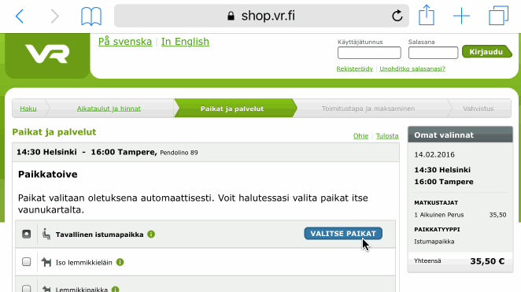

Tässä puukko, jolla VR:n verkkokaupan paikanvalinnan saa toimimaan ilman Flashia ja näyttämään koko junan kerralla. Toiminee uudehkoilla selaimilla. Käytä näin:
Huom: varsinkin iOS:lla bookmarkletin lisäminen on mutkikasta. Pitää ensin bookmarkata tuo #-versio ja sitten käydä muokkaamassa siitä se risu ja risua edeltävä osa pois.
Tämän bookmarkletin pitäisi olla harmiton, mutta käyttö omalla vastuulla. VR:llä ei ole tämän kanssa mitään tekemistä. — tekijä (twitter)
Koodi löytyy GitHubista.
Kokeile myös Chrome-liitännäistä.
